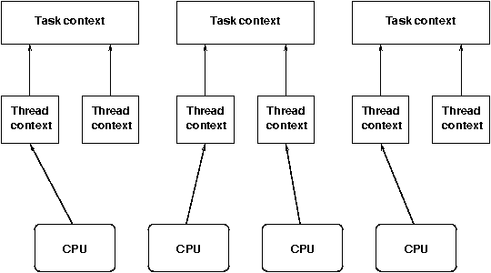

Context-Switching and Thread-Synchronization with a 6502
(C) 2007-2007 André Fachat
In this article I want to show how modern computer system design can be implemented with the simple 6502 CPU that was never designed for multiprocessing or multithreading.
The focus is on the specific hardware requirements that modern system design has to implement features like on-demand swapping and paging, or safe thread synchronization. For this purpose I briefly discuss multithreading, multitasking and multiprocessing, and then investigate context switching and thread synchronization with their hardware requirements.
For both main topics - context switching and thread synchronization - I show a hardware solution implementing up-to-date techniques with the 6502.
Table of content
Introduction
In the beginning of computing computers had a single CPU, and could run a single program. Those computers, however, were quite expensive and the CPU often had to wait for I/O. Thus the systems were modified such that multiple programs could run on the same machine, where when one program for example waited for an I/O operation, another program would run - the first multitasking [1].
Later lightweight processes, or "threads" were introduced. A single program could have multiple of those threads running quasi-parallel within the same program - multithreading [2].
Some systems had multiple processors that shared the same memory. Those multiple processors could be used to run different programs and threads in parallel [3,4].
The first programs could basically assume to "own" the whole computer (this is still true for Commodore 64 programs for example). However, to achieve multitasking, each program (task) had to have separate control data and had to be protected in some way from other tasks. This is done for example by virtual addresses for each task, with a mapping from virtual to physical address space such that a task can not access - and overwrite - another tasks memory [5]. This memory mapping is part of a task's "context". When a task is stopped to start another task, the "context" is switched by - among other things - setting the new task's memory mapping.
A thread is defined as a "thread of execution" in a program. A task is defined to contain a number of threads, but having at least one thread. Switching between threads does not involve switching the memory mapping and other task context, but only switching between the thread context. The thread context mainly consists of the CPU registers and is thus more easily exchanged than a task context.
Now how about multiple processors? Each processor can at any one time execute a single thread of execution (Hyperthreading left aside, that can be seen as multiprocessing, and is handled as such by the operating systems). In a system with multiple tasks, each processor could for example run a thread from a different task. If only a single tasks has some work to do, however, multiple processors could run multiple threads from the same tasks.

The diagram shows the relationship between processors, threads, and tasks.
Context switching
- Save the interrupted address on stack
- Save the CPU registers on stack
- Change the memory mapping to the kernel environment
- In the thread scheduler select the next active thread
- Change the memory mapping to the thread's task's memory environment
- Reload the CPU registers from the stack
- return to the interrupted address
Context Switching Performance
A memory mapping on a modern processor can be rather large. A 32bit processor with a mapping in pages of 4k has about one million mapping entries, to map 2^20 pages of 4k (2^12) from virtual to physical memory. This mapping is called the "page table(s)" [6]. Now assume that the thread just loops and uses only a few pages of memory for its time slice. It would thus be a waste to load the full memory mapping on every context switch. Modern processors hold the translation table in memory, and a single register holds the address of the current translation table. They also use a translation lookaside buffer as cache to speed up lookup of physical addresses.
Page Metadata
The page tables can hold more information than the simple physical address. An entry in this table can hold information whether the page is dirty for example, i.e. whether it has been written to since an earlier point in time. It can also hold a flag whether that page is actually present in physical memory. When a processor accesses such a "non-existent" page, it in general faults to a segmentation fault, aborting the thread or task.
Newer processors also hold a state bit that defines whether a memory page contains executable code or not. This feature has been implemented to protect the stack area from executable code being maliciously injected by buffer overflows.
On-Demand Mapping - Swapping
The metadata can be used dynamically handle the memory mapping. For example if all tasks together require more virtual memory than is physically available, the operating system can use disk memory to save infrequently used pages of memory, and use the page table metadata to mark those pages for a task. When a thread then runs on such a page, the page is read from disk into physical memory, possibly replacing another page that is then written to disk. This process is called "swapping".
The dirty flag when available can be used to avoid writing back a page to disk if it still is on disk and has not been modified in memory.
If an executable is loaded from disk, the operating system may even resolve to "lazy-loading" a binary. I.e. only loading those pages from disk where the CPU faulted on an unmapped page when the fault occurs.
System Requirements
To enable on-demand mapping, two major requirements have to be fulfilled by the system:
- The system must be able to detect memory faults. I.e. it must have metadata in the page table that describe whether the page exists, is modified, or an executable for example. It must detect the fault conditions appropriately (e.g. a write access to a write protected page).
- The CPU must be able to handle the memory faults appropriately. This especially means that on a memory fault the CPU must be able to interrupt the opcode, handle the fault for example by swapping pages, and return to exactly the state it had before the fault, to continue the opcode. Modern processors are able to rollback a partially executed opcode to the state just before the opcode to achieve this. I.e. when the fault occurs in the middle of an opcode, the processor will rollback the opcode if possible, handle the fault, and re-execute the opcode again - this time without error. An older workstation used a 68000 CPU that did not have that feature, but used a second CPU to handle the exception.
Context Switching with the 6502
The (NMOS) 6502 is a very old CPU. It has not been designed with multitasking in mind. It thus lacks the second essential requirement: it can not stop or rollback the execution of an opcode, handle an exception (interrupt) and continue with the opcode. Two workaround exists:
65816
The 65816 [12], a expanded and compatible successor to the 6502 has an "ABORTB" input, that allows it to handle a memory fault: When the ABORTB input is used, the current opcode is finished, but without modifying the internal registers. After the opcode an interrupt is executed, and when the interrupt is handled, returns to the interrupted opcode.
CS/A Auxiliary CPU
The CS/A65 computer system implements the two essential requirements itself outside the CPU:
- The system uses a memory management unit (MMU) to map the 64k virtual CPU address space to a 1M physical address space. But the MMU also contains metadata for each page: a flag whether the page is present or not (NOTMAPD), write protected (WPROT), or does not contain executable code (NOEXEC). The CPU board then checks each access against these metadata bits and generates error signals on the CS/A65 bus.
- The AUXCPU board listens to these error conditions, and when such a condition occurs, stops the main CPU in the middle of the opcode during the faulted memory access. It then takes over the bus and can handle the memory fault appropriately. When it is done it has removed the error condition and returns control to the main CPU, that continues the opcode exactly at the position that has originally faulted.
Task and Thread Synchronization
Running multiple threads and tasks in a system is only half fun if they can not communicate with each other. This communication is necessary for example when one task needs to wait for the result of another task's computation.
Tasks can communicate with each other via operating system channels like signals (sending an interrupt to another task), semaphores, or I/O channels like sockets. In this article, however, I want to concentrate on shared memory communication, which is a simple technique, and works between threads of a tasks, as well as tasks when the tasks have shared memory.
Also I ignore the cache topic, as it is not (yet?) relevant for a 6502, as memory today is as fast as the CPU so a cache is not needed. Using a cache introduces another plethora of possible problems and issues with interprocess communication, so it is a good thing we do not need it.
Shared Memory Synchronization
When two threads communicate via a shared memory location, the problems only occur when both threads have write access to the location. If only a single thread writes, and the other thread only reads this location, no problem occurs.
Even when both threads write to a memory location, it can work if this access is "interleaved". For example thread A sets the location to 1 only if it is 0, while thread B sets the same location only sets it to 0 when the value of the location is 1.
If, however, both threads need to access and especially modify the memory location in the same state, there is a problem. A "race condition" can occur [7]. If the CPU for example does a read-modify-write operation, it can be interrupted between the read and write operation by another thread, that can modify the memory location.
Semaphores
initialize(s) {
s = 1;
}
// atomic
P(s) {
while (s == 0);
s = 0;
}
V(s) {
s = 1;
}
But how is a semaphore implemented? The semaphore is a shared memory location initialized to 1, and the P() operation checks if the value is larger than zero, and sets it to 0 if so. If the value already is zero, it waits until it becomes zero. The V() operation sets the value to 0.
The P() operation reads a value from memory, operates on it, and writes a new value back. The crucial point is that the P() operation must be atomic. I.e. it must not happen that after reading the value the thread is interrupted, another thread executes and passes the P() operation, and when the first thread continues also passes the P() operation, as it has already read the value before the second thread.
Now that we drilled down to more elementary operations, how can this be implemented?
Disabling Interrupts
The P() operation can disable the interrupts for a period as short as possible to avoid that another thread gets scheduled. This is a viable solution in a single-processor system. In a multiprocessor system, however, still another CPU could run into the P() operation.
Atomic Read-Modify-Write
In a multiprocessor system an atomic read-modify-write operation can be used [10]. Often a "test-and-set" or a "compare-and-swap" operation is supported. This, however, needs to be supported by the hardware. The CPU performs two memory operations that must be handled as a single operation. I.e. in a multiprocessor system no other processor must be able to access the memory location during that atomic operation of the first processor. This is done by "locking" the memory bus. I.e. during an atomic operation no other CPU may use the memory bus and thus ensures the atomicity. The locking, however, due to its global operation reduces performance and increases hardware complexity.
Optimistic Locking
The pattern I describe here is know as "optimistic locking" in version control systems, or as load-link/store-conditional opcode pair [11]. The first operation load-link (LL) reads a memory location and reserves it. The store-conditional (CC) operation then stores a new value to the memory location if and only if no update has occured on the memory location.
This is implemented in a way that the CPU monitors the memory bus to see if another CPU modifies the same location.
Thread Synchronization with the 6502
Again the (NMOS) 6502 not been designed with multitasking in mind. Although it does have read-modify-write operations (the rotate or increment operations when used on memory locations for example), it does not lock out other CPUs, it can not even signal this Read-Modify-Write operation to external circuitry that could emulate the lock.
65816
The 65816 has a "ML" output line. This line is active during a read-modify-write operation, and can thus be used by an external circuitry to enforce an atomic operation.
CS/A Coprocessor
The CS/A65 computer system implements a coprocessor board with 64k memory that are shared between the main CPU and the coprocessor.
The control port on the coprocessor board is protected by a LL/SC functionality. When it is read by the main CPU, it can be written to by the main CPU if and only if there has been no update from the coprocessor in the meantime, and vice versa.
This way proper synchronization is achieved - with additional hardware effort though.
Summary
In this article I have given a brief summary on context switching and task synchronization and what type of hardware support is required to support this functionality. With the CS/A65 boards I have shown that it is possible even with the original 6502 to implement the basic functionality required.
Links
- [1] Wikipedia on multitasking
- [2] Wikipedia on threads
- [3] Wikipedia on multiprocessing
- [4] Wikipedia on concurrent computing
- [5] Wikipedia on paging
- [6] Wikipedia on page tables
- [7] Wikipedia on race conditions
- [8] Wikipedia on semaphores
- [9] Wikipedia on mutexes
- [10] Wikipedia on atomic operations
- [11] Wikipedia on lock-free read/modify/write
- [12] The 65816
Disclaimer
All Copyrights are acknowledged. The information here is provided under the terms of the GNU Public License version 2 unless noted otherwise.
Return to Homepage